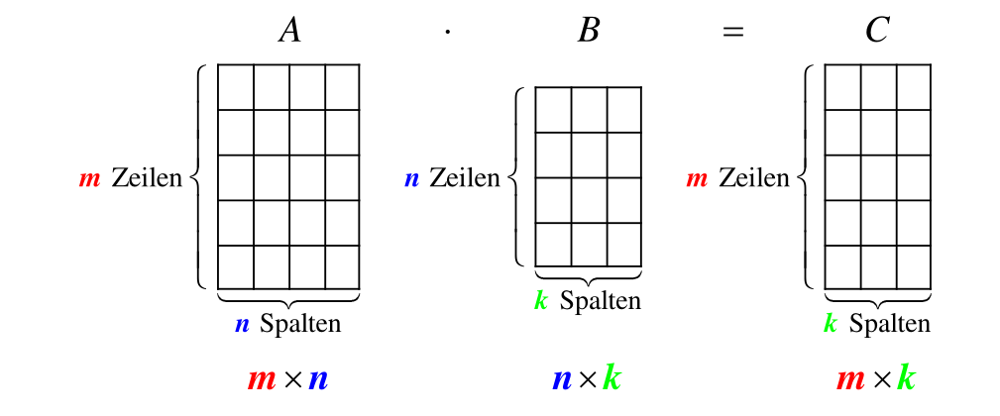
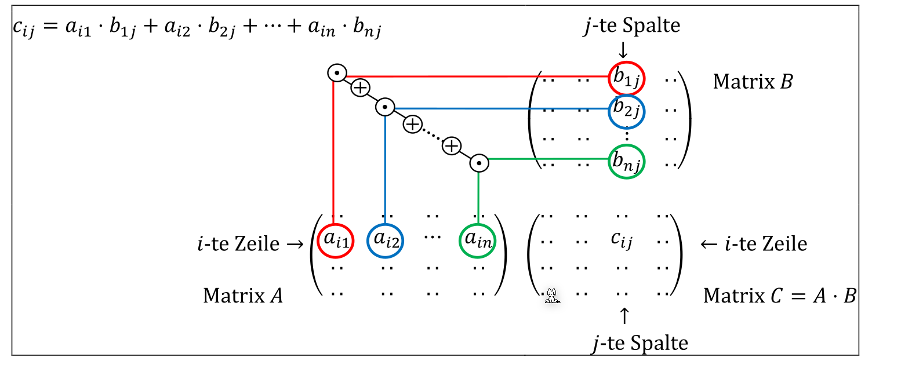
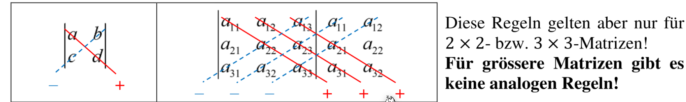
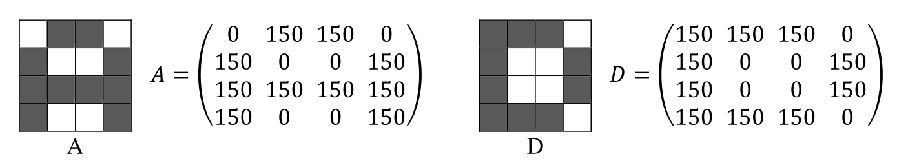
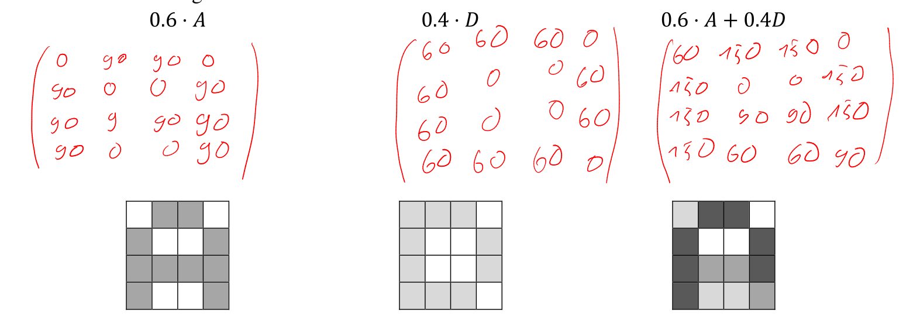
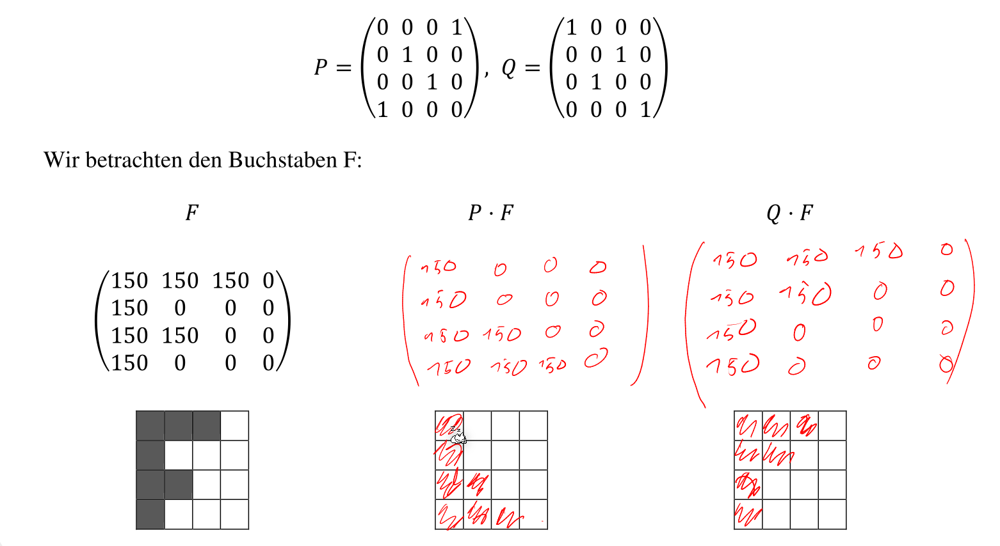
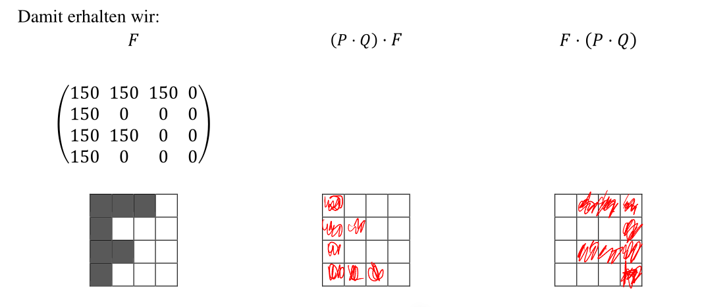
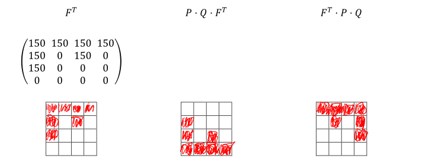

Matrix
Eine Matrix ist ein rechteckiges Zahlenfeld, wie z.B. diese 3x2 Matrix: \(\begin{bmatrix}7 & 6 & 2\\2 & 3 & 3\end{bmatrix}\)
Spezial-Typen
- Null-Matrix Eine Matrix, bei denen alle Elemente \(0\) sind
- Spaltenmatrix Eine Matrix, welche nur eine Spalte haben und sind dasselbe, wie Vektoren
Addition und Subtraktion
Matrizen addieren und subtrahieren ist denkbar einfach. Jede Zahl wird mir der Zahl an der gleichen Stelle in der anderen Matrix addiert, bzw. subtrahiert. $$ \begin{bmatrix}x_1 & x_2 & x_3 \ x_4 & x_5 & x_6\end{bmatrix} - \begin{bmatrix}y_1 & y_2 & y_3 \ y_4 & y_5 & y_6\end{bmatrix} = \begin{bmatrix}x_1-y_1 & x_2-y_2 & x_3-y_3 \ x_4-y_4 & x_5-y_5 & x_6-y_6\end{bmatrix} $$ Dasselbe gilt auch für die Addition.
Für die Addition und Subtraktion müssen beide Matrizden dieselbe Grösse haben, sonst ist das Ergebnis undefiniert.
Skalar Multiplikation
Wenn eine Matrix mit einem Wert, wie 3 multipliziert wird, entsteht eine neue Matrix, in welcher alle Werte mit diesem Wert multipliziert wurden: $$ c \cdot \begin{bmatrix}x_1 & x_2 & x_3 \ x_4 & x_5 & x_6\end{bmatrix}= \begin{bmatrix}c\cdot x_1 & c\cdot x_2 & c\cdot x_3 \ c\cdot x_4 & c\cdot x_5 & c\cdot x_6\end{bmatrix} $$
Matrix Multiplikation
Wenn zwei Matrizen multipliziert werden, wie \(A\cdot B\), dann muss die Breite von \(A\) gleich die Höhe von \(B\) sein. Das Resultat ist eine Matrix, welche so hoch ist, wie \(A\) und so breit ist, wie \(B\).


$$ \begin{bmatrix}x_{11} & x_{21} & x_{31} \ x_{12} & x_{22} & x_{32}\end{bmatrix} \cdot \begin{bmatrix}y_{11} & y_{21} \ y_{12} & y_{22} \ y_{13} & y_{23}\end{bmatrix} = \begin{bmatrix} x_{11}\cdot y_{11} + x_{21}\cdot y_{12} + x_{31}\cdot y_{13} & x_{11}\cdot y_{21} + x_{21}\cdot y_{22} + x_{21}\cdot y_{23} \ x_{12}\cdot y_{12} + x_{22}\cdot y_{12} + x_{32}\cdot y_{13} & x_{12}\cdot y_{21} + x_{22}\cdot y_{22} + x_{22}\cdot y_{23} \end{bmatrix} $$ Wegen dieser Rechnenart, ist die Multiplikation mit zwei Matrizen nicht kommunikativ.Eine weitere wichtige Eigenschaften von Matrix-Multiplikation ist, dass folgendes nicht gilt: \(A\cdot B=C \text { und } A \cdot D = C \not \Rightarrow B=D\), da es möglich ist, dass \(B\) und \(D\) verschiedene Matrix sein können, welche beide dasselbe Ergebniss \(C\) gibt, wenn mit \(A\) multipliziert.
Rechnungsregeln
Die folgenden Rechenregeln funktioniert für gleichgrosse Matrizen.
- Kommutativ-Gesetz: \(A+B=B+A\) (Geht NICHT bei Multiplikation)
- Assoziativ-Gesetzt: \(A+(B+C)=(A+B)+C\)
- Distributiv-Gesetzt: \(\lambda\cdot(A+B)=\lambda\cdot A + \lambda \cdot B\)
-
Aber Achtung: \(\lambda\cdot A + B\cdot \lambda\) kann nicht ausgeklammert werden (In könnte einfach \(\lambda \cdot A\) und \(B\cdot \lambda\) ausgerechnet werden)
-
Distributiv-Gesetzt mit Transportierten Matrizen:
- \((A\cdot B)^T=B^T \cdot A^T\) (Beachte die Reihenfolge von A und B)
- \((A+B)^T=A^T+B^T=B^T+A^T\)
- \((A-B)^T=A^T-B^T=B^T-A^T\)
Einheitsmatrix
Eine Einheitsmatrix, ist eine quadratische Matrix, welche Diagonal überall eine 1 hat und sonst 0:
$$
\begin{bmatrix}
1 & 0 & 0 & 0\
0 & 1 & 0 & 0\
0 & 0 & 1 & 0\
0 & 0 & 0 & 1
\end{bmatrix}
$$
Diese Matrix hat die Eigenschaft, dass wenn eine Matrix \(A\) mit einer Identitätsmatrix multipliziert wird, dass wieder die Matrix \(A\) herauskommt.
Inverse Matrix
Die Inverse Matrix, ist die Matrix \(A^{-1}\), welche mit der Matrix \(A\), eine Identitätsmatrix \(I\) ergibt:
\(A\cdot A^{-1}=I\)
Das Inverse Skalar-Multiplikationen kann folgendermassen gebildet werden: \((3A)^{-1}=\frac 1 3 A^{-1}\)
Das Inverse einer Matrix kann gebildet werden, wenn die \(\mathrm{det}(A)\neq 0\) ist, bzw. die "Vektoren" in der Matrix linear unabhängig sind.
Inverse Matrix von 2x2-Matrix
Für 2x2-Matrizen gibt es eine Formel, um das Inverse zu errechnen. Dabei gilt aber: \(ad\neq bc\) $$ \pmatrix{a & b\ c & d}^{-1}=\frac 1 {ad-bc}\cdot \pmatrix{d & -b \ -c & a} $$
Singuläre und reguläre Matrizen
Eine Matrix wird regulär genannt, wenn es ein Inverse von der Matrix gibt. Ansonsten wird sie Singulär genannt.
Gauss-Jordan Verfahren zur Berechnung der Inverse
TODO
Transponierte Matrix
Eine transponierte Matrix \(A^T\) von \(A\) ist, wenn die Spalten in \(A\) zu Reihen werden und die Reihen in \(A\) zu Spalten werden. Man kann es sich auch vorstellen, als ob man die Matrix um 90° gegen den Uhrzeigersinn dreht: $$ B= \begin{bmatrix} 1 & 2 & 3\ 3 & 4 & 5 \end{bmatrix}\ B^T= \begin{bmatrix} 1 & 3 \ 2 & 4\ 3 & 5 \end{bmatrix} $$ Es gilt folgendes Gesetzt: \((A\cdot B)^T=B^T\cdot A^T\)
Bemerke, dass sich die Reihenfolge von \(A\) und \(B\) sich ändert.
Gleichheit
Zwei Matrizen sind gleich, wenn alle Elemente der Matritzen gleich sind.
Determinanten

Wenn die Determinanten einer grösseren Matrix als 3x3 Berechnet werden soll, kann ein Verfahren nach Laplace eingesetzt werden:
-
Es wird eine feste Spalte oder Zeile gewählt
-
Nun wird nach der folgenden Formel entwickelt: $$ \text{Entwicklung nach i-ten Zeilen: }\det(A)=\sum^n_{j=1} (-1)^{i+j}\cdot a_{ij}\cdot\det(A_{ij})\ \text{Entwicklung nach j-ten Spalte: }\det(A)=\sum^n_{i=1} (-1)^{i+j}\cdot a_{ij}\cdot\det(A_{ij})\ $$ Dabei ist \(a_{ij}\), das Element an \(i\)-ter Zeile und \(j\)-ter Spalte und \(A_{ij}\) die Matrix, bei welcher die \(i\)-te Zeile und \(j\)-Spalte weggelassen wurden
Eigenschaften
Wenn der Determinant \(\neq 0\) ist, dann gilt:
- \(\rg(A)=0\)
- Die Matrix ist invertierbar
Wenn der Determinant \(=0\) ist, dann gilt:
- \(\rg(A) < n\) (wobei \(n\) die Anzahl Spalten der Matrix \(A\) ist)
Rechenoperation mit Bilder
Man kann die einzelnen Elemente einer Matrix als Pixel in einem Bild darstellen.

Skalaroperation
Mit einer Skalarmultiplikation kann das ganze Bild heller oder dunkler gestalltet werden. Wenn zwei Matrizen addiert werden, überlagern sich ihre Pixel.

Matrixen Produkt
Mit dem Matrizen-Produkt können Zeilen vertauscht werden.


Transponieren
Wenn eine Matrix transponiert wird, wird das Bild entlang der Hauptdiagonalen g
